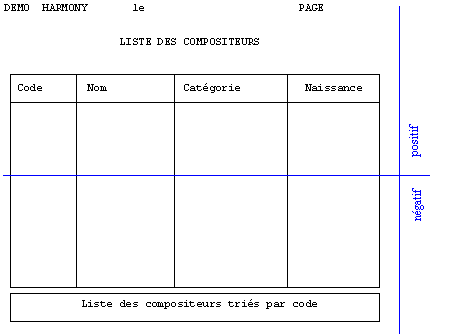

La position des blocs s'exprime d'abord selon leur type :
En numéro de ligne dans la page, pour les blocs de type Fixe, Fond ou Mobile.
En numéro de ligne dans le corps du tableau, pour les blocs de type Tableau.
Ensuite, une première méthode consiste à exprimer toutes les positions des blocs relativement au début de la page ou du corps du tableau.
On commence à 1 et on compte les lignes à partir du haut de la page ou du corps du tableau. Les paramètres Position début et Position fin ont alors tous une valeur positive. Dans notre exemple d'état, on obtient ainsi, pour les blocs 1 à 4, les bornes respectives suivantes : [1, 10], [11, 61], [12, 62] et [63, 66].
Mais ce faisant, nous figeons implicitement le nombre de lignes de la page.
Dans l'exemple où nous affectons les bornes [63, 66] au bloc 4 de pied de page, nous supposons que le nombre de lignes de la page est au minimum de 66.
L'inconvénient majeur de cette manière de procéder est que le masque devient inutilisable en cas d'utilisation d'un modèle d'imprimante (voir remarque sur le nombre de lignes de la page en fin de rubrique), lorsque ce modèle exige moins de 66 lignes par page. Et même si le nombre de lignes par page est connu et constant, des anomalies de positionnement pourront apparaître suite par exemple à une modification de l'agencement des blocs dans la page ou à une modification de la taille d'un tableau.
La méthode optimale consiste plutôt à exprimer certaines positions relativement à la fin de la page ou du corps du tableau : on commence à 0 et on compte les lignes à partir du bas de la page ou du corps du tableau. Les Position début et fin ont alors conventionnellement une valeur négative ou nulle (0 représentant la dernière ligne). Cette méthode rendra le plus souvent le masque Xwin indépendant du modèle d'imprimante utilisé à l'exécution ou de la taille finale d'un tableau.
Dans la plupart des cas, on utilisera ainsi :
Une valeur positive pour les bornes début et fin des blocs placés en haut de la page.
Une valeur négative pour les bornes début et fin des blocs placés en bas de la page.
Une valeur positive pour la borne début et négative pour la borne fin des blocs dont le placement s'échelonne entre le haut et le bas de la page.

Dans notre exemple, les bornes des blocs 1 à 4 deviennent respectivement [1, 10], [11, -5], [12, -4] et [-3, 0]
Remarque sur le nombre de lignes imprimées par page :
Rappelons que le nombre de lignes de la page papier est fourni :
Soit par le modèle d'imprimante chargé à l'exécution.
Soit par le nombre de lignes saisi dans les paramètres généraux du masque.
Voir le chapitre "Réglage de la hauteur de page" du livre consacré au gestionnaire d'imprimantes ymig.